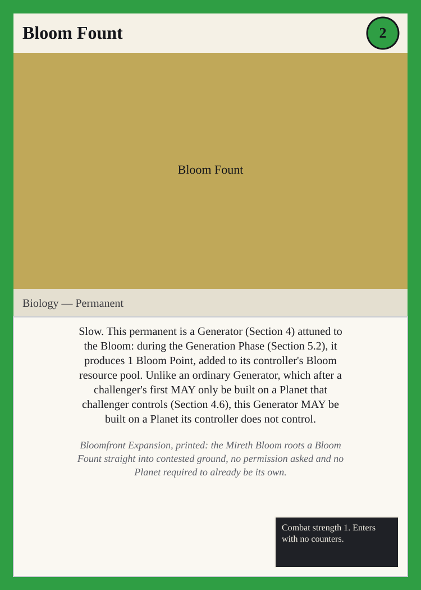
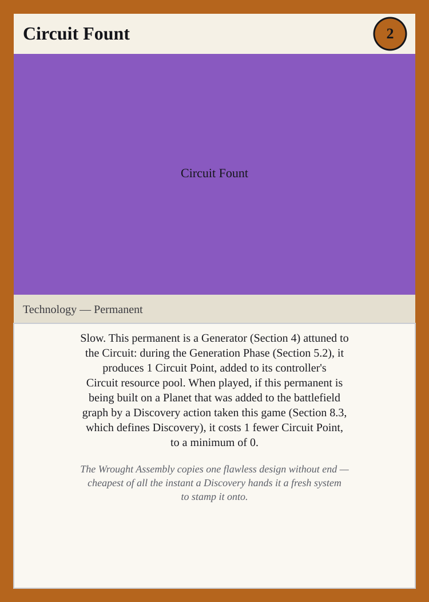

Spatial Race Identity Set, Wave 2 — Two More Races Grounded in the Graph
Summary
This file contains 2 named cards, completing what design/cards/spatial- race-identity-set.md (the wave-1 proposal) left undone: design/ideas- inbox.md's first 2026-07-26 spatial-layer entry claims the battlefield graph "Interacts with every race identity," naming a materials race and an intelligence race only as illustrative examples ("e.g."), not an exhaustive list — yet the wave-1 file grounds only the three races named in the later 2026-07-26 entry (Panoptic Concord, Starweave Communion, Cindral Reach), leaving the Mireth Bloom and the Wrought Assembly with no card referencing a Planet, Wormhole, or Discovery. This file grounds both races' own already-shipped identity text directly: design/races/mireth- bloom.md's signature hook "Bloomfront Expansion — Biology generators can be built directly onto contested territory" becomes the Bloom Fount, a Mireth Bloom Generator that MAY be built on a Planet its controller does not control, an unbuilt exception to design/rules.md Section 4.6; and design/races/wrought-assembly.md's identity paragraph describing a civilization that wants "a single flawless design, copied without end across every system it can reach" becomes the Circuit Fount, a Wrought Assembly Generator that costs less Circuit when built on a Planet reached via a Discovery action, an unbuilt exception to Section 8.3. No rules.md change is needed or made — both effects are stated exceptions to already-shipped defaults, the same pattern the wave-1 file uses. Every card follows the canonical template of design/rules.md Section 9.1. These two cards complete Wreck Tangle's roster of wormhole-grounded race-identity cards, now covering all five races.
The Mireth Bloom
Bloom Fount

Cost line: 2 Bloom Type line: Biology — Permanent Rules text: Slow. This permanent is a Generator (Section 4) attuned to the Bloom: during the Generation Phase (Section 5.2), it produces 1 Bloom Point, added to its controller's Bloom resource pool. Unlike an ordinary Generator, which after a challenger's first MAY only be built on a Planet that challenger controls (Section 4.6), this Generator MAY be built on a Planet its controller does not control. Stats/counters line: Combat strength 1. Enters with no counters.
Bloomfront Expansion, printed: the Mireth Bloom roots a Bloom Fount straight into contested ground, no permission asked and no Planet required to already be its own.
The Wrought Assembly
Circuit Fount

Cost line: 2 Circuit Type line: Technology — Permanent Rules text: Slow. This permanent is a Generator (Section 4) attuned to the Circuit: during the Generation Phase (Section 5.2), it produces 1 Circuit Point, added to its controller's Circuit resource pool. When played, if this permanent is being built on a Planet that was added to the battlefield graph by a Discovery action taken this game (Section 8.3, which defines Discovery), it costs 1 fewer Circuit Point, to a minimum of 0.
The Wrought Assembly copies one flawless design without end — cheapest of all the instant a Discovery hands it a fresh system to stamp it onto.